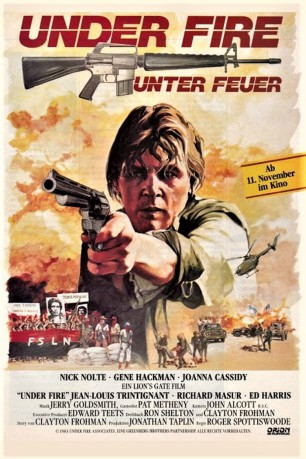
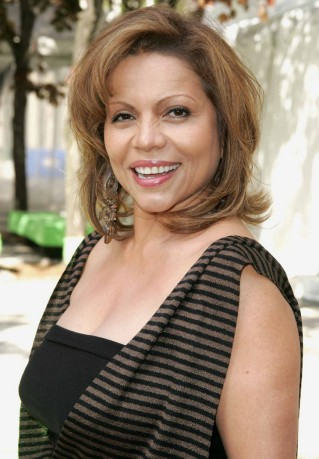

#9673 Unter Feuer
Alternativ: Under Fire
Auszeichnungen: für 1 Oscars nominiert
 
 IMDB-Wertung: 7.1 / 10
IMDB-Wertung: 7.1 / 10  Metascore: 0
Metascore: 0 
Drei US-amerikanische Journalisten berichten 1979 über die Revolution in Nicaragua. Einer von ihnen sieht sich während der letzten Wochen der Somoza-Diktatur zu einer moralischen Entscheidung für die Sandinisten gezwungen und schlägt sich auf die Seite von deren Truppen.
Jahr: 1983
Dauer: 128 Minuten
FSK: 16
Land: USA Studio: Orion PicturesTonspuren:
Untertitel:
Auflösung: 1080p (1920x1040) Größe: 8949 MB
Genre: Drama, Krieg
Regisseur:  Roger Spottiswoode
Roger Spottiswoode
Drehbuch: Clayton Frohman, Clayton Frohman, Ron Shelton
Soundtrack: Jerry Goldsmith
Darsteller:
 Nick Nolte als Russell Price
Nick Nolte als Russell Price Ed Harris als Oates
Ed Harris als Oates Gene Hackman als Alex Grazier
Gene Hackman als Alex Grazier Joanna Cassidy als Claire
Joanna Cassidy als Claire Alma Martinez als Isela
Alma Martinez als Isela- Holly Palance als Journalist
 Hamilton Camp als Regis Seydor
Hamilton Camp als Regis Seydor Jean-Louis Trintignant als Marcel Jazy
Jean-Louis Trintignant als Marcel Jazy Richard Masur als Hub Kittle
Richard Masur als Hub Kittle- Víctor Alcocer als Sandinista
 Enrique Lucero als Prison Priest
Enrique Lucero als Prison Priest-  Jenny Gago als Miss Panama
 Elpidia Carrillo als Sandinista
Elpidia Carrillo als Sandinista Eloy Casados als Pedro
Eloy Casados als Pedro- René Enríquez als President Anastasio Somoza
- Martin LaSalle als Commandante Cinco
- Leonor Llausás als Woman in shanty town
 Bruno Bichir als Muchacho at Jazy's house
Bruno Bichir als Muchacho at Jazy's house- Monica Miguel als Doctor
- Ella Laboriel als Nightclub Singer
- Samuel Zarzosa als Jazz Combo: drums
- Jonathan Zarzosa als Jazz Combo: piano
- Raul Picasso als Jazz Combo: bass
- Oswaldo Doria als Boy Photographer
- Fernando Elizondo als Businessman
- Jorge Santoyo als Guerilla Leader
- Lucina Rojas als Guerilla Leader
- Raúl García als Waiter
- Eric F. Valdez als
- Andaluz Russell als Young Journalist
- E. Villavicencio als Arresting Officer
- Enrique Beraza als Interrogating Officer
- Martin Palmares als Sandinista
- Gerardo Albarrán als Sandinista
- Carlos Romano als Priest
- Jose Campos Jr. als Soldier
- Raymard Camp als TV-camera crew
- Antonio Mata Jr. als TV-camera crew
- Julio Cesar Vazquez als Small Boy
- Filipe Ytuarte als Commandante
- Jorge Zepeda als Rafael
- Alfredo Gutiérrez als Soldier at roadblock
- Jose Marin als Soldier at roadblock
- J.A. Ferral als Soldier at Jazy's house
- E. Baramona als Soldier at Jazy's house
- Octavio Cruz als Soldier at Jazy's house
- Juan Carlos Meizueiro als Boy Soldier
- Humberto Vilches als Squadron Commander
- Roberto Dumant als Hotel Clerk
- Ahui Camacho als Muchacho at Jazy's house
Datei: X:\1983\Unter Feuer (1983, FSK16, 1920x1040).mkv seit 02.10.2018
Festplatte: HD 1980-1986
 Es gibt insgesamt 35 Filme in der Gruppe '1983'
Es gibt insgesamt 35 Filme in der Gruppe '1983'